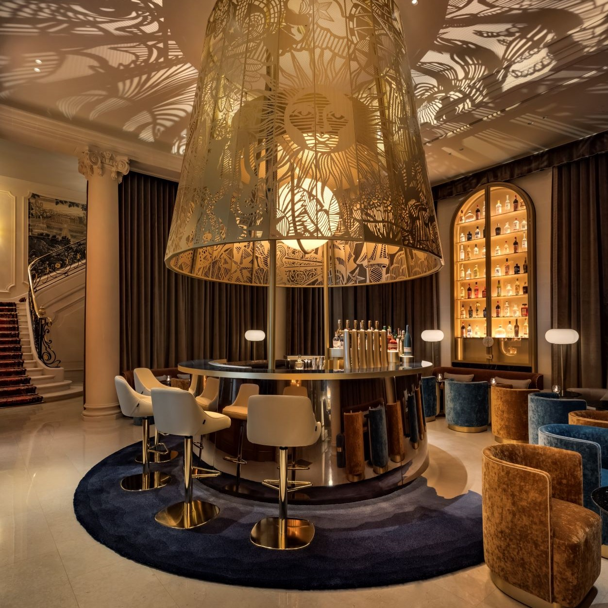

LE NOUVEAU PARISMO BAR
Le 27 septembre 2021, à l’occasion de la Paris Fashion Week, le Ritz Paris inaugure un
nouveau rendez-vous dans l’agenda parisien, avec un Ritz Bar inédit, intime et un rituel spectaculaire.
Hommage à César Ritz, visionnaire et gentleman-pionnier en matière d’électricité et d’hôtellerie,
le Ritz Bar réinterprète l’esprit de la Belle Époque, portée par le progrès,
la fantaisie et la magie des sciences divinatoires.
Accessible par le
15 place Vendôme 75001 Paris
ou le 38 rue Cambon 75001 Paris
Ouvert du mardi au samedi de 17 h 30 à 00 h 30
La lanterne du Parismo Bar
Trônant au centre d’un espace de 80 m², un bar circulaire
orné d’une lanterne monumentale accueille les visiteurs.
Chaque soir, à 17h30 précises, cette lanterne de 2,50
mètres de hauteur, en laiton finement ciselée et
développant une fresque de constellations zodiacales,
se hisse au sommet et démarre un rituel animé de sons et de
